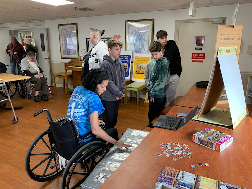
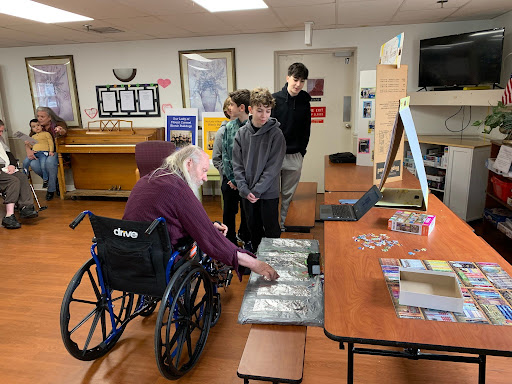
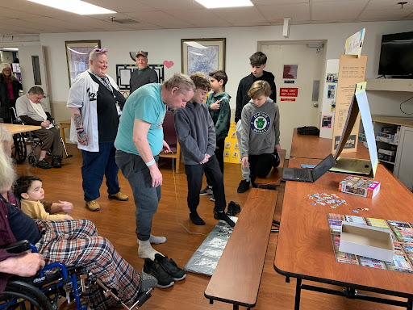

About Us
This year, we began The Magic of Music as just a way for our robotics team to help others. Now, it has grown into much more than that. We hope to spread our love of music to people around the world, starting with our local community. If you would like to try out one of our Magic Pianos, or have us come for a visit, go to the Contact page for more info.


